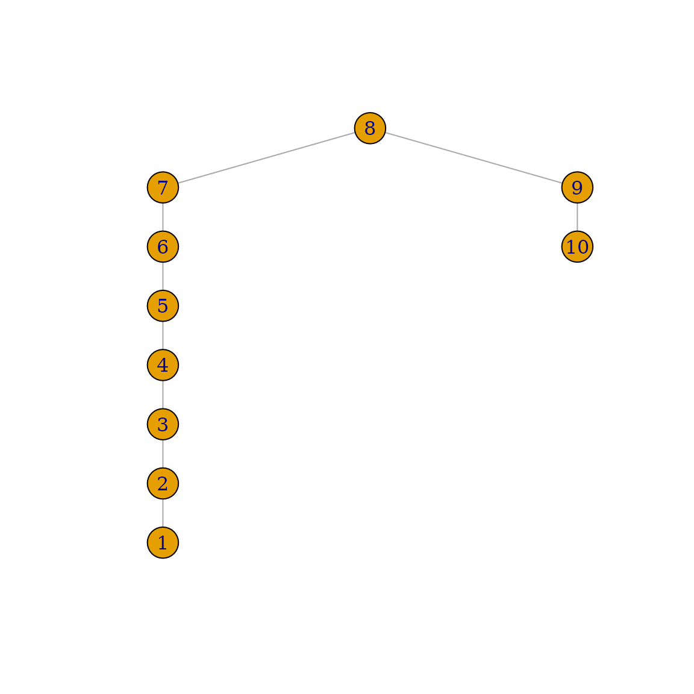
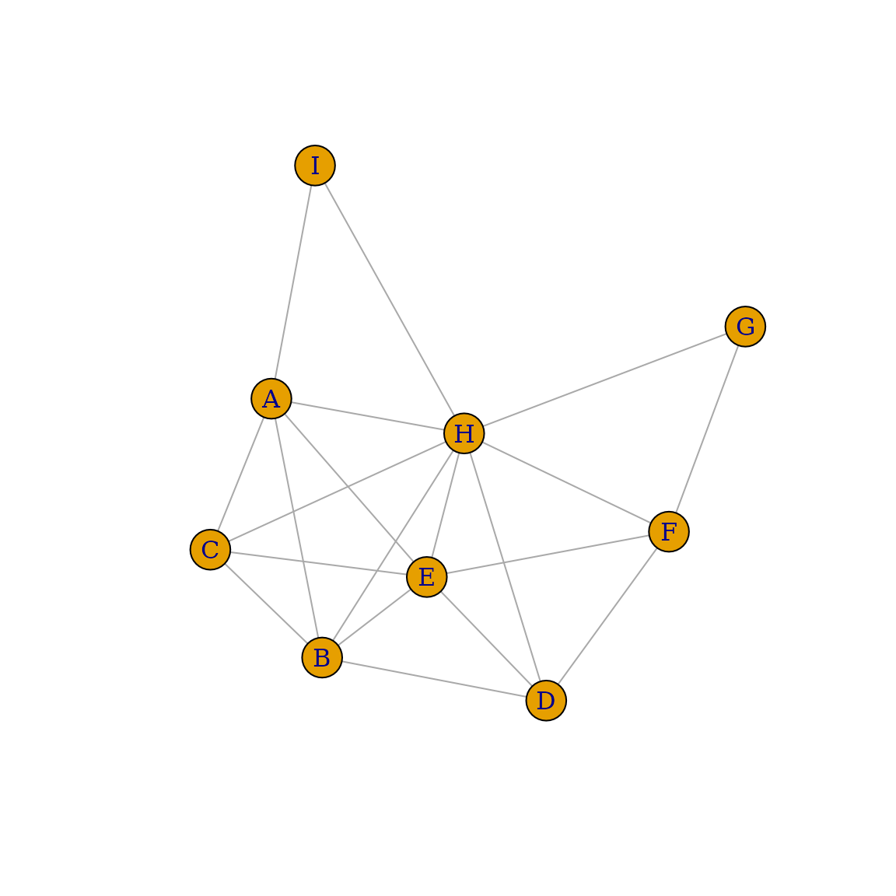
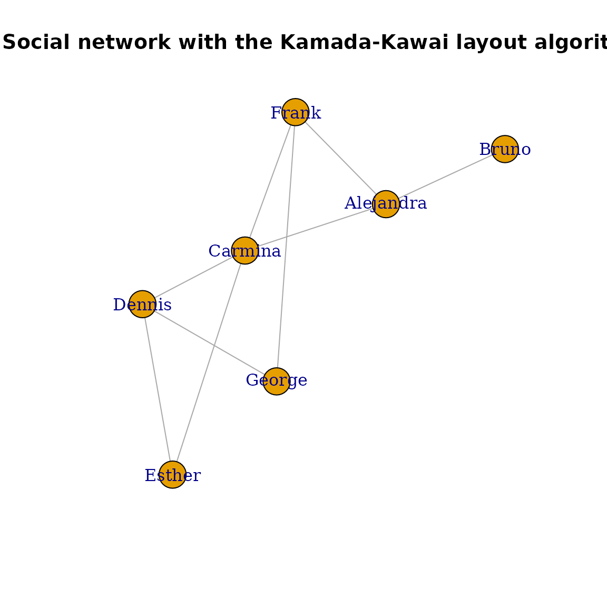
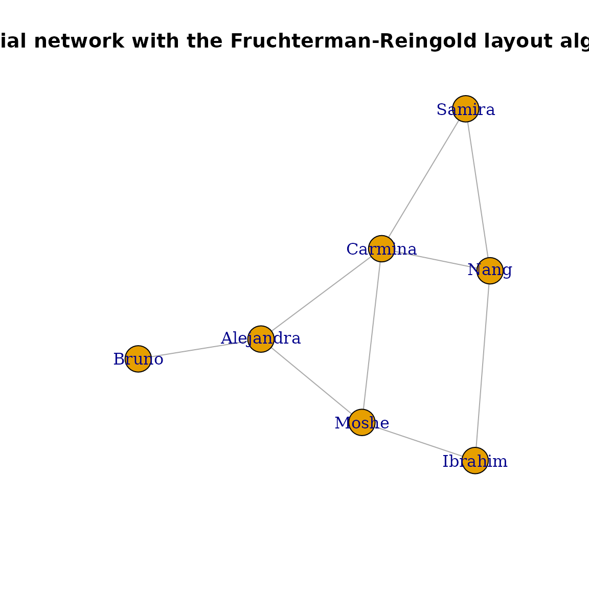
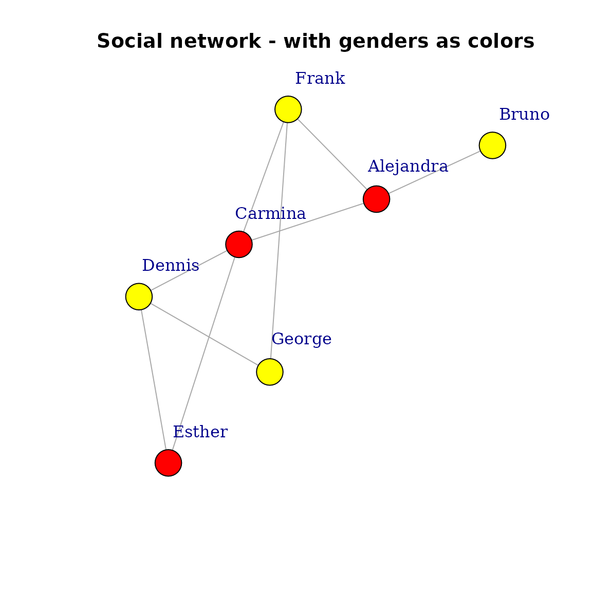
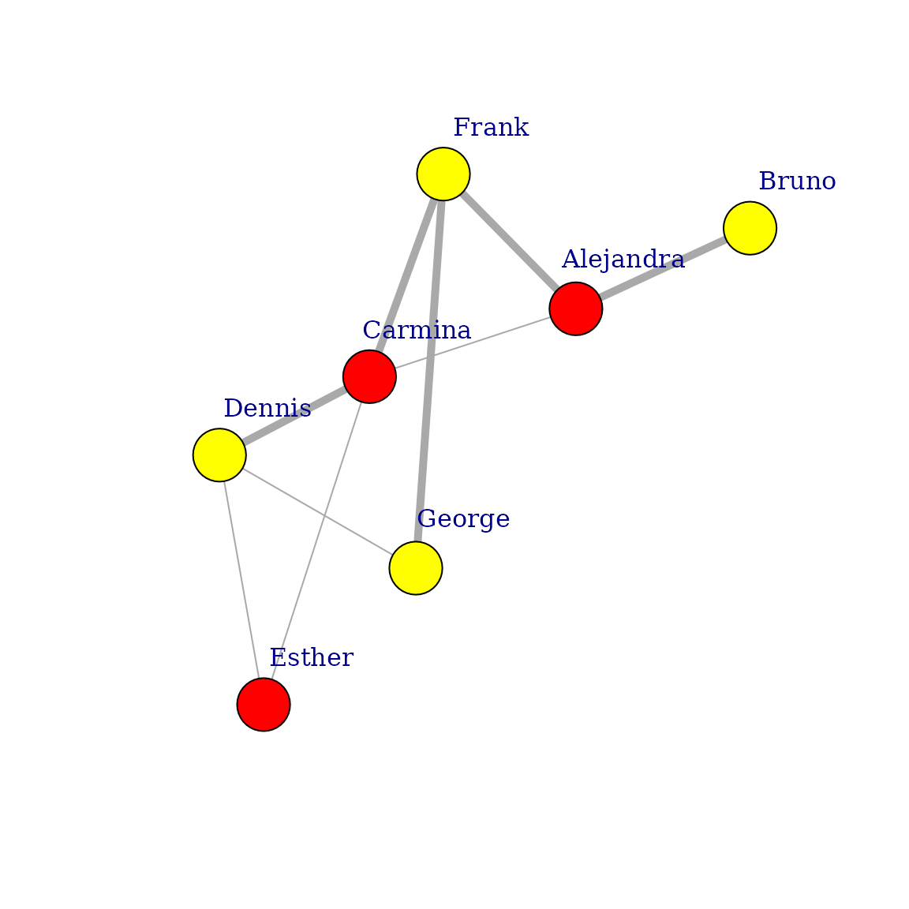

igraph is a fast and open source library for the
analysis of graphs or networks. The library consists of a core written
in C and bindings for high-level languages including R, Python, and Mathematica.
This vignette aims to give you an overview of the functions available in
the R interface of igraph. For detailed function by
function API documentation, check out https://r.igraph.org/reference/.
NOTE: Throughout this tutorial, we will use words
graph and network as synonyms, and also
vertex or node as synonyms.
Installation
To install the library from CRAN, use:
install.packages("igraph")More details on dependencies, requirements, and troubleshooting on installation are found on the main documentation page.
Usage
To use igraph in your R code, you must first load the
library:
##
## Attaching package: 'igraph'## The following objects are masked from 'package:stats':
##
## decompose, spectrum## The following object is masked from 'package:base':
##
## unionNow you have all igraph functions available.
Creating a graph
igraph offers many ways to create a graph. The simplest
one is the function make_empty_graph():
g <- make_empty_graph()The most common way to create a graph is make_graph(),
which constructs a network based on specified edges. For example, to
make a graph with 10 nodes (numbered 1 to 10)
and two edges connecting nodes 1-2 and
1-5:
g <- make_graph(edges = c(1, 2, 1, 5), n = 10, directed = FALSE)Starting from igraph 0.8.0, you can also include literal here, via
igraph’s formula notation. In this case, the first term of the formula
has to start with a ~ character, just like regular formulae
in R. The expressions consist of vertex names and edge operators. An
edge operator is a sequence of - and +
characters, the former is for the edges and the latter is used for arrow
heads. The edges can be arbitrarily long, that is to say, you may use as
many - characters to “draw” them as you like. If all edge
operators consist of only - characters then the graph will
be undirected, whereas a single + character implies a
directed graph: that is to say to create the same graph as above:
g <- make_graph(~ 1--2, 1--5, 3, 4, 5, 6, 7, 8, 9, 10)We can print the graph to get a summary of its nodes and edges:
g## IGRAPH 66632ec UN-- 10 2 --
## + attr: name (v/c)
## + edges from 66632ec (vertex names):
## [1] 1--2 1--5This means: Undirected Named graph
with 10 vertices and 2 edges, with the
exact edges listed out. If the graph has a [name]
attribute, it is printed as well.
NOTE: summary() does not list the
edges, which is convenient for large graphs with millions of edges:
summary(g)## IGRAPH 66632ec UN-- 10 2 --
## + attr: name (v/c)The same function make_graph() can create some notable
graphs by just specifying their name. For example you can create the
graph that represents the social network of Zachary’s karate club, that
shows the friendship between 34 members of a karate club at a US
university in the 1970s:
g <- make_graph("Zachary")To visualize a graph you can use plot():
plot(g)
A more detailed description of plotting options is provided later on in this tutorial.
Vertex and edge IDs
Vertices and edges have numerical vertex IDs in igraph. Vertex IDs
are always consecutive and they start with 1. For a graph with n
vertices the vertex IDs are always between 1 and n. If some operation
changes the number of vertices in the graphs, for instance a subgraph is
created via induced_subgraph(), then the vertices are
renumbered to satisfy this criterion.
The same is true for the edges as well: edge IDs are always between 1 and m, the total number of edges in the graph.
NOTE: If you are familiar with the C core or the Python interface of
igraph, you might have noticed that in those languages
vertex and edge IDs start from 0. In the R interface, both start from 1
instead, to keep consistent with the convention in each language.
In addition to IDs, vertices and edges can be assigned a name and other attributes. That makes it easier to track them whenever the graph is altered. Examples of this pattern are shown later on in this tutorial.
Adding/deleting vertices and edges
Let’s continue working with the Karate club graph. To add one or more
vertices to an existing graph, use add_vertices():
g <- add_vertices(g, 3)Similarly, to add edges you can use add_edges():
Edges are added by specifying the source and target vertex IDs for
each edge. This call added three edges, one connecting vertices
1 and 35, one connecting vertices
1 and 36, and one connecting vertices
34 and 37.
In addition to the add_vertices() and
add_edges() functions, the plus operator can be used to add
vertices or edges to graph. The actual operation that is performed
depends on the type of the right hand side argument:
You can add a single vertex/edge at a time using
add_vertex() and add_edge() (singular).
Warning: If you need to add multiple edges to a
graph, it is much more efficient to call add_edges() once
rather than repeatedly calling add_edge() with a single new
edge. The same applies when deleting edges and vertices.
If you try to add edges to vertices with invalid IDs (i.e., you try
to add an edge to vertex 38 when the graph has only 37
vertices), igraph shows an error:
## Error in add_edges(g, edges = c(38, 37)): At vendor/cigraph/src/graph/type_indexededgelist.c:261 : Out-of-range vertex IDs when adding edges. Invalid vertex IDLet us add some more vertices and edges to our graph. In
igraph we can use the magrittr package, which
provides a mechanism for chaining commands with the operator
%>%:
g <- g %>%
add_edges(edges = c(1, 34)) %>%
add_vertices(3) %>%
add_edges(edges = c(38, 39, 39, 40, 40, 38, 40, 37))
g## IGRAPH 0065ffb U--- 40 86 -- Zachary
## + attr: name (g/c)
## + edges from 0065ffb:
## [1] 1-- 2 1-- 3 1-- 4 1-- 5 1-- 6 1-- 7 1-- 8 1-- 9 1--11 1--12
## [11] 1--13 1--14 1--18 1--20 1--22 1--32 2-- 3 2-- 4 2-- 8 2--14
## [21] 2--18 2--20 2--22 2--31 3-- 4 3-- 8 3--28 3--29 3--33 3--10
## [31] 3-- 9 3--14 4-- 8 4--13 4--14 5-- 7 5--11 6-- 7 6--11 6--17
## [41] 7--17 9--31 9--33 9--34 10--34 14--34 15--33 15--34 16--33 16--34
## [51] 19--33 19--34 20--34 21--33 21--34 23--33 23--34 24--26 24--28 24--33
## [61] 24--34 24--30 25--26 25--28 25--32 26--32 27--30 27--34 28--34 29--32
## [71] 29--34 30--33 30--34 31--33 31--34 32--33 32--34 33--34 1--35 1--36
## + ... omitted several edgesWe now have an undirected graph with 40 vertices and 86 edges. Vertex
and edge IDs are always contiguous, so if you delete a vertex
all subsequent vertices will be renumbered. When a vertex is renumbered,
edges are not renumbered, but their source and target
vertices will be. Use delete_vertices() and
delete_edges() to perform these operations. For instance,
to delete the edge connecting vertices 1-34, get its ID and
then delete it:
edge_id_to_delete <- get.edge.ids(g, c(1, 34))
edge_id_to_delete## [1] 82
g <- delete_edges(g, edge_id_to_delete)As an example, to create a broken ring:
g <- make_ring(10) %>% delete_edges("10|1")
plot(g)
The example above shows that you can also refer to edges with strings
containing the IDs of the source and target vertices, connected by a
pipe symbol |. "10|1" in the above example
means the edge that connects vertex 10 to vertex 1. Of course you can
also use the edge IDs directly, or retrieve them with the
get.edge.ids() function:
g <- make_ring(5)
g <- delete_edges(g, get.edge.ids(g, c(1, 5, 4, 5)))
plot(g)
As another example, let’s make a chordal graph. Remember that a graph
is chordal (or triangulated) if each of its cycles of four or more nodes
has a chord, which is an edge joining two nodes that are not adjacent in
the cycle. First, let’s create the initial graph using
graph_from_literal():
g1 <- graph_from_literal(
A - B:C:I, B - A:C:D,
C - A:B:E:H,
D - B:E:F,
E - C:D:F:H,
F - D:E:G,
G - F:H,
H - C:E:G:I,
I - A:H
)
plot(g1)
In the example above, the : operator was used to define
vertex sets. If an edge operator connects two vertex sets, then every
vertex from the first set will be connected to every vertex in the
second set. Then we use is_chordal() to evaluate if our
graph is chordal and to search what edges are missing to fill-in the
graph:
is_chordal(g1, fillin = TRUE)## $chordal
## [1] FALSE
##
## $fillin
## [1] 2 6 8 7 5 7 2 7 6 1 7 1
##
## $newgraph
## NULLWe can then add the edges required to make the initial graph chordal in a single line:
chordal_graph <- add_edges(g1, is_chordal(g1, fillin = TRUE)$fillin)
plot(chordal_graph)
Constructing graphs
In addition to make_empty_graph(),
make_graph(), and make_graph_from_literal(),
igraph includes many other function to construct a graph.
Some are deterministic, that is to say they produce the same
graph each single time, for instance make_tree():
## IGRAPH cd202c8 U--- 127 126 -- Tree
## + attr: name (g/c), children (g/n), mode (g/c)This generates a regular tree graph with 127 vertices, each vertex
having two children. No matter how many times you call
make_tree(), the generated graph will always be the same if
you use the same parameters:
graph2 <- make_tree(127, 2, mode = "undirected")
identical_graphs(graph1, graph2)## [1] TRUEOther functions generate graphs stochastically, which means
they produce a different graph each time. For instance
sample_grg():
graph1 <- sample_grg(100, 0.2)
summary(graph1)## IGRAPH d00bc00 U--- 100 524 -- Geometric random graph
## + attr: name (g/c), radius (g/n), torus (g/l)This generates a geometric random graph: n points are chosen randomly and uniformly inside the unit square and pairs of points closer to each other than a predefined distance d are connected by an edge. If you generate GRGs with the same parameters, they will be different:
graph2 <- sample_grg(100, 0.2)
identical_graphs(graph1, graph2)## [1] FALSEA slightly looser way to check if the graphs are equivalent is via
isomorphic. Two graphs are said to be isomorphic if they
have the same number of components (vertices and edges) and maintain a
one-to-one correspondence between vertices and edges, that is to say,
they are connected in the same way.
isomorphic(graph1, graph2)## [1] FALSEChecking for isomorphism can take a while for large graphs (in this
case, the answer can quickly be given by checking the degree sequence of
the two graphs). identical_graph() is a stricter criterion
than isomorphic(): the two graphs must have the same list
of vertices and edges, in exactly the same order, with same
directedness, and the two graphs must also have identical graph, vertex
and edge attributes.
Setting and retrieving attributes
In addition to IDs, vertex and edges can have attributes
such as a name, coordinates for plotting, metadata, and weights. The
graph itself can have such attributes too (for instance a name, which
will show in summary()). In a sense, every graph, vertex
and edge can be used as an R namespace to store and retrieve these
attributes.
To demonstrate the use of attributes, let us create a simple social network:
g <- make_graph(
~ Alice - Boris:Himari:Moshe, Himari - Alice:Nang:Moshe:Samira,
Ibrahim - Nang:Moshe, Nang - Samira
)Each vertex represents a person, so we want to store ages, genders
and types of connection between two people (is_formal()
refers to whether a connection between one person or another is formal
or informal, respectively colleagues or friends). The $
operator is a shortcut to get and set graph attributes. It is shorter
and just as readable as graph_attr() and
set_graph_attr().
V(g)$age <- c(25, 31, 18, 23, 47, 22, 50)
V(g)$gender <- c("f", "m", "f", "m", "m", "f", "m")
E(g)$is_formal <- c(FALSE, FALSE, TRUE, TRUE, TRUE, FALSE, TRUE, FALSE, FALSE)
summary(g)## IGRAPH 99553f1 UN-- 7 9 --
## + attr: name (v/c), age (v/n), gender (v/c), is_formal (e/l)V() and E() are the standard way to obtain
a sequence of all vertices and edges, respectively. This assigns an
attribute to all vertices/edges at once. Another way to
generate our social network is with the use of
set_vertex_attr() and set_edge_attr() and the
operator %>%:
g <- make_graph(
~ Alice - Boris:Himari:Moshe, Himari - Alice:Nang:Moshe:Samira,
Ibrahim - Nang:Moshe, Nang - Samira
) %>%
set_vertex_attr("age", value = c(25, 31, 18, 23, 47, 22, 50)) %>%
set_vertex_attr("gender", value = c("f", "m", "f", "m", "m", "f", "m")) %>%
set_edge_attr("is_formal", value = c(FALSE, FALSE, TRUE, TRUE, TRUE, FALSE, TRUE, FALSE, FALSE))
summary(g)To assign or modify an attribute for a single vertex/edge:
E(g)$is_formal## [1] FALSE FALSE TRUE TRUE TRUE FALSE TRUE FALSE FALSE## [1] TRUE FALSE TRUE TRUE TRUE FALSE TRUE FALSE FALSEAttribute values can be set to any R object, but note that storing the graph in some file formats might result in the loss of complex attribute values. Vertices, edges and the graph itself can all be used to set attributes, for instance to add a date to the graph:
g$date <- c("2022-02-11")
graph_attr(g, "date")## [1] "2022-02-11"To retrieve attributes, you can also use graph_attr(),
vertex_attr(), and edge_attr(). To find the ID
of a vertex you can use the function match():
## [1] 7To assign attributes to a subset of vertices or edges, you can use:
## + 7/7 vertices, named, from 99553f1:
## [1] Alejandra Bruno Carmina Moshe Nang Samira IbrahimTo delete attributes:
g <- delete_vertex_attr(g, "gender")
V(g)$gender## NULLIf you want to save a graph in R with all the attributes use the R’s
standard function dput() function and retrieve it later
with dget(). You can also just save the R workspace and
restore it later.
Structural properties of graphs
igraph provides a large set of functions to calculate
various structural properties of graphs. It is beyond the scope of this
tutorial to document all of them, hence this section will only introduce
a few of them for illustrative purposes. We will work on the small
social network constructed in the previous section.
Perhaps the simplest property one can think of is the
degree. The degree of a vertex equals the number of edges
adjacent to it. In case of directed networks, we can also define
in-degree (the number of edges pointing towards the vertex) and
out-degree (the number of edges originating from the vertex).
igraph is able to calculate all of them using a simple
syntax:
degree(g)## Alejandra Bruno Carmina Moshe Nang Samira Ibrahim
## 3 1 4 3 3 2 2If the graph was directed, we would have been able to calculate the
in- and out-degrees separately using degree(mode = "in")
and degree(mode = "out"). You can also pass a single vertex
ID or a list of vertex IDs to degree() if you want to
calculate the degrees for only a subset of vertices:
degree(g, 7)## Ibrahim
## 2## Carmina Moshe Nang
## 4 3 3Most functions that accept vertex IDs also accept vertex
names (the values of the name vertex attribute) as
long as the names are unique:
## Carmina Moshe Nang
## 4 3 3It also works for single vertices:
degree(g, "Bruno")## Bruno
## 1A similar syntax is used for most of the structural properties
igraph can calculate. For vertex properties, the functions
accept a vertex ID, a vertex name, or a list of vertex IDs or names (and
if they are omitted, the default is the set of all vertices). For edge
properties, the functions accept a single edge ID or a list of edge
IDs.
NOTE: For some measures, it does not make sense to
calculate them only for a few vertices or edges instead of the whole
graph, as it would take the same time anyway. In this case, the
functions won’t accept vertex or edge IDs, but you can still restrict
the resulting list later using standard operations. One such example is
eigenvector centrality (evcent()).
Besides degree, igraph includes built-in routines to calculate many
other centrality properties, including vertex and edge betweenness
(edge_betweenness()) or Google’s PageRank
(page_rank()) just to name a few. Here we just illustrate
edge betweenness:
## [1] 6 6 4 3 4 4 4 2 3Now we can also figure out which connections have the highest betweenness centrality:
ebs <- edge_betweenness(g)
as_edgelist(g)[ebs == max(ebs), ]## [,1] [,2]
## [1,] "Alejandra" "Bruno"
## [2,] "Alejandra" "Carmina"Querying vertices and edges based on attributes
Selecting vertices
Imagine that in a given social network, you want to find out who has
the largest degree. You can do that with the tools presented so far and
the which.max() function:
## Carmina
## 3Another example would be to select only vertices that have only odd
IDs but not even ones, using the V() function:
graph <- graph.full(n = 10)## Warning: `graph.full()` was deprecated in igraph 2.0.4.
## ℹ Please use `make_full_graph()` instead.
## This warning is displayed once every 8 hours.
## Call `lifecycle::last_lifecycle_warnings()` to see where this warning was
## generated.## [1] 5Of course, it is possible to select vertices or edges by positional indices:
seq <- V(graph)[2, 3, 7]
seq## + 3/10 vertices, from f36ec0b:
## [1] 2 3 7
seq <- seq[1, 3] # filtering an existing vertex set
seq## + 2/10 vertices, from f36ec0b:
## [1] 2 7Selecting a vertex that does not exist results in an error:
seq <- V(graph)[2, 3, 7, "foo", 3.5]
## Error in simple_vs_index(x, ii, na_ok) : Unknown vertex selectedAttribute names can also be used as-is within the indexing brackets
of V() and E(). This can be combined with R’s
ability to use Boolean vectors for indexing to obtain very concise and
readable expressions to retrieve a subset of the vertex or edge set of a
graph. For instance, the following command gives you the names of the
individuals younger than 30 years in our social network:
V(g)[age < 30]$name## [1] "Alejandra" "Carmina" "Moshe" "Samira"Of course, < is not the only boolean operator that
can be used for this. Other possibilities include the following:
| Operator | Meaning |
|---|---|
== |
The attribute/property value must be equal to |
!= |
The attribute/property value must not be equal to |
< |
The attribute/property value must be less than |
<= |
The attribute/property value must be less than or equal to |
> |
The attribute/property value must be greater than |
>= |
The attribute/property value must be greater than or equal to |
%in% |
The attribute/property value must be included in |
You can also create a “not in” operator from %in% using
the Negate() function:
`%notin%` <- Negate(`%in%`)If an attribute has the same name as an igraph function,
you should be careful as the syntax can become a little confusing. For
instance, if there is an attribute named degree that
represents the grades of an exam for each person, that should not be
confused with the igraph function that computes the degrees
of vertices in a network sense:
## [1] "A" "A+" "C"## [1] "Alejandra" "Moshe" "Nang"Selecting edges
Edges can be selected based on attributes just like vertices. As
mentioned above, the standard way to get edges is E.
Moreover, there are a few special structural properties for selecting
edges.
Using .from() allows you to filter the edge sequence
based on the source vertices of the edges. For instance, to select all
the edges originating from Carmina (who has vertex index 3):
## + 4/9 edges from 99553f1 (vertex names):
## [1] Alejandra--Carmina Carmina --Moshe Carmina --Nang Carmina --SamiraOf course it also works with vertex names:
## + 4/9 edges from 99553f1 (vertex names):
## [1] Alejandra--Carmina Carmina --Moshe Carmina --Nang Carmina --SamiraUsing .to() filters edge sequences based on the target
vertices. This is different from .from() if the graph is
directed, while it gives the same answer for undirected graphs. Using
.inc() selects only those edges that are incident on a
single vertex or at least one of the vertices, irrespective of the edge
directions.
The %--% operator can be used to select edges between
specific groups of vertices, ignoring edge directions in directed
graphs. For instance, the following expression selects all the edges
between Carmina (vertex index 3), Nang (vertex index 5) and Samira
(vertex index 6):
## + 3/9 edges from 99553f1 (vertex names):
## [1] Carmina--Nang Carmina--Samira Nang --SamiraTo make the %--% operator work with names, you can build
string vectors containing the names and then use these vectors as
operands. For instance, to select all the edges that connect men to
women, we can do the following after re-adding the gender attribute that
we deleted earlier:
men <- V(g)[gender == "m"]$name
men## [1] "Bruno" "Moshe" "Nang" "Ibrahim"
women <- V(g)[gender == "f"]$name
women## [1] "Alejandra" "Carmina" "Samira"## + 5/9 edges from 99553f1 (vertex names):
## [1] Alejandra--Bruno Alejandra--Moshe Carmina --Moshe Carmina --Nang
## [5] Nang --SamiraTreating a graph as an adjacency matrix
The adjacency matrix is another way to represent a graph. In an adjacency matrix, rows and columns are labeled by graph vertices, and the elements of the matrix indicate the number of edges between vertices i and j. The adjacency matrix for the example graph is:
## 7 x 7 sparse Matrix of class "dgCMatrix"
## Alejandra Bruno Carmina Moshe Nang Samira Ibrahim
## Alejandra . 1 1 1 . . .
## Bruno 1 . . . . . .
## Carmina 1 . . 1 1 1 .
## Moshe 1 . 1 . . . 1
## Nang . . 1 . . 1 1
## Samira . . 1 . 1 . .
## Ibrahim . . . 1 1 . .For example, Carmina (1, 0, 0, 1, 1, 1, 0) is directly
connected to Alejandra (who has vertex index 1), Moshe (index 4), Nang
(index 5) and Samira (index 6), but not to Bruno (index 2) or to Ibrahim
(index 7).
Layouts and plotting
A graph is an abstract mathematical object without a specific representation in 2D, 3D or any other geometric space. This means that whenever we want to visualise a graph, we have to find a mapping from vertices to coordinates in two- or three-dimensional space first, preferably in a way that is useful and/or pleasing for the eye. A separate branch of graph theory, namely graph drawing, tries to solve this problem via several graph layout algorithms. igraph implements quite a few layout algorithms and is also able to draw them onto the screen or to any output format that R itself supports.
Layout algorithms
The layout functions in igraph always start with layout.
The following table summarises them:
| Method name | Algorithm description |
|---|---|
layout_randomly |
Places the vertices completely randomly |
layout_in_circle |
Deterministic layout that places the vertices on a circle |
layout_on_sphere |
Deterministic layout that places the vertices evenly on the surface of a sphere |
layout_with_drl |
The Drl (Distributed Recursive Layout) algorithm for large graphs |
layout_with_fr |
Fruchterman-Reingold force-directed algorithm |
layout_with_kk |
Kamada-Kawai force-directed algorithm |
layout_with_lgl |
The LGL (Large Graph Layout) algorithm for large graphs |
layout_as_tree |
Reingold-Tilford tree layout, useful for (almost) tree-like graphs |
layout_nicely |
Layout algorithm that automatically picks one of the other algorithms based on certain properties of the graph |
Layout algorithms can be called directly with a graph as its first argument. They will return a matrix with two columns and as many rows as the number of vertices in the graph; each row will correspond to the position of a single vertex, ordered by vertex IDs. Some algorithms have a 3D variant; in this case they return 3 columns instead of 2.
layout <- layout_with_kk(g)Some layout algorithms take additional arguments; for instance, when laying out a graph as a tree, it might make sense to specify which vertex is to be placed at the root of the layout:
layout <- layout_as_tree(g, root = 2)Drawing a graph using a layout
We can plot our imaginary social network with the Kamada-Kawai layout algorithm as follows:
layout <- layout_with_kk(g)
plot(g, layout = layout, main = "Social network with the Kamada-Kawai layout algorithm")
This should open a new window showing a visual representation of the network. Remember that the exact placement of nodes may be different on your machine since the layout is not deterministic.
The layout argument also accepts functions; in this
case, the function will be called with the graph as its first argument.
This makes it possible to just pass the name of a layout function
directly, without creating a layout variable:
plot(
g,
layout = layout_with_fr,
main = "Social network with the Fruchterman-Reingold layout algorithm"
)
To improve the visuals, a trivial addition would be to color the vertices according to the gender. We should also try to place the labels slightly outside the vertices to improve readability:
V(g)$color <- ifelse(V(g)$gender == "m", "yellow", "red")
plot(
g,
layout = layout, vertex.label.dist = 3.5,
main = "Social network - with genders as colors"
)
You can also treat the gender attribute as a factor and
provide the colors with an argument to plot(), which takes
precedence over the color vertex attribute. Colors will be
assigned automatically to levels of a factor:

As seen above with the vertex.color argument, you can
specify visual properties as arguments to plot instead of
using vertex or edge attributes. The following plot shows the formal
ties with thick lines while informal ones with thin lines:
plot(g,
layout = layout, vertex.label.dist = 3.5, vertex.size = 20,
vertex.color = ifelse(V(g)$gender == "m", "yellow", "red"),
edge.width = ifelse(E(g)$is_formal, 5, 1)
)
This latter approach is preferred if you want to keep the properties of the visual representation of your graph separate from the graph itself.
In summary, there are special vertex and edge properties that correspond to the visual representation of the graph. These attributes override the default settings of igraph (i.e color, weight, name, shape, layout, etc.). The following two tables summarise the most frequently used visual attributes for vertices and edges, respectively:
Vertex attributes controlling graph plots
| Attribute name | Keyword argument | Purpose |
|---|---|---|
color |
vertex.color |
Color of the vertex |
label |
vertex.label |
Label of the vertex. They will be converted to character. Specify NA to omit vertex labels. The default vertex labels are the vertex ids. |
label.cex |
vertex.label.cex |
Font size of the vertex label, interpreted as a multiplicative
factor, similarly to R’s text function |
label.color |
vertex.label.color |
Color of the vertex label |
label.degree |
vertex.label.degree |
It defines the position of the vertex labels, relative to the center of the vertices. It is interpreted as an angle in radian, zero means ‘to the right’, and ‘pi’ means to the left, up is -pi/2 and down is pi/2. The default value is -pi/4 |
label.dist |
vertex.label.dist |
Distance of the vertex label from the vertex itself, relative to the vertex size |
label.family |
vertex.label.family |
Font family of the vertex, similarly to R’s text
function |
label.font |
vertex.label.font |
Font within the font family of the vertex, similarly to R’s
text function |
shape |
vertex.shape |
The shape of the vertex, currently “circle”, “square”, “csquare”, “rectangle”, “crectangle”, “vrectangle”, “pie” (see vertex.shape.pie), ‘sphere’, and “none” are supported, and only by the plot.igraph command. |
size |
vertex.size |
The size of the vertex, a numeric scalar or vector, in the latter case each vertex sizes may differ |
Edge attributes controlling graph plots
| Attribute name | Keyword argument | Purpose |
|---|---|---|
color |
edge.color |
Color of the edge |
curved |
edge.curved |
A numeric value specifies the curvature of the edge; zero curvature means straight edges, negative values means the edge bends clockwise, positive values the opposite. TRUE means curvature 0.5, FALSE means curvature zero |
arrow.size |
edge.arrow.size |
Currently this is a constant, so it is the same for every edge. If a vector is submitted then only the first element is used, that is to say if this is taken from an edge attribute then only the attribute of the first edge is used for all arrows. |
arrow.width |
edge.arrow.width |
The width of the arrows. Currently this is a constant, so it is the same for every edge |
width |
edge.width |
Width of the edge in pixels |
label |
edge.label |
If specified, it adds a label to the edge. |
label.cex |
edge.label.cex |
Font size of the edge label, interpreted as a multiplicative factor,
similarly to R’s text function |
label.color |
edge.label.color |
Color of the edge label |
label.family |
edge.label.family |
Font family of the edge, similarly to R’s text
function |
label.font |
edge.label.font |
Font within the font family of the edge, similarly to R’s
text function |
Generic arguments of plot()
These settings can be specified as arguments to the plot
function to control the overall appearance of the plot.
| Keyword argument | Purpose |
|---|---|
layout |
The layout to be used. It can be an instance of Layout,
a list of tuples containing X-Y coordinates, or the name of a layout
algorithm. The default is auto, which selects a layout
algorithm automatically based on the size and connectedness of the
graph. |
margin |
The amount of empty space below, over, at the left and right of the plot, it is a numeric vector of length four. |
igraph and the outside world
No graph module would be complete without some kind of import/export
functionality that enables the package to communicate with external
programs and toolkits. igraph is no exception: it provides
functions to read the most common graph formats and to save graphs into
files obeying these format specifications. The main functions for
reading and writing from/to file are read_graph() and
write_graph(), respectively. The following table summarises
the formats igraph can read or write:
| Format | Short name | Read function | Write function |
|---|---|---|---|
| Adjacency list (a.k.a. LGL) | lgl |
read_graph(file, format = c("lgl")) |
write_graph(graph, file, format = c("lgl")) |
| Adjacency matrix | adjacency |
graph_from_adjacency_matrix(adjmatrix, mode = c("directed", "undirected", "max", "min", "upper","lower", "plus"), weighted = NULL, diag = TRUE, add.colnames = NULL, add.rownames = NA) |
as.matrix(graph, "adjacency") |
| DIMACS | dimacs |
read_graph(file, format = c("dimacs")) |
write_graph(graph, file, format = c("dimacs")) |
| Edge list | edgelist |
read_graph(file, format = c("edgelist")) |
write_graph(graph, file, format = c("edgelist")) |
| GraphViz | dot |
not supported yet | write_graph(graph, file, format = c("dot")) |
| GML | gml |
read_graph(file, format = c("gml")) |
write_graph(graph, file, format = c("gml")) |
| GraphML | graphml |
read_graph(file, format = c("graphml")) |
write_graph(graph, file, format = c("graphml")) |
| LEDA | leda |
not supported yet | write_graph(graph, file, format = c("leda")) |
| Labeled edgelist (a.k.a. NCOL) | ncol |
read_graph(file, format = c("ncol")) |
write_graph(graph, file, format = c("ncol")) |
| Pajek format | pajek |
read_graph(file, format = c("pajek")) |
write_graph(graph, file, format = c("pajek")) |
NOTE: Each file format has its own limitations. For instance, not all of them can store attributes. Your best bet is probably GraphML or GML if you want to save igraph graphs in a format that can be read from an external package and you want to preserve numeric and string attributes. Edge list and NCOL is also fine if you don’t have attributes (NCOL supports vertex names and edge weights, though).
Where to go next
This tutorial is a brief introduction to igraph in R. We
sincerely hope you enjoyed reading it and that it will be useful for
your own network analyses.
For a detailed description of specific functions, see https://r.igraph.org/reference/. For questions on how to
use igraph, please visit our Forum. To report a bug, open a
Github issue.
Please do not ask usage questions on Github directly as it’s meant for
developers rather than users.
Session info
For the sake of reproducibility, the session information for the code above is the following:
## R version 4.4.1 (2024-06-14)
## Platform: x86_64-pc-linux-gnu
## Running under: Ubuntu 22.04.4 LTS
##
## Matrix products: default
## BLAS: /usr/lib/x86_64-linux-gnu/openblas-pthread/libblas.so.3
## LAPACK: /usr/lib/x86_64-linux-gnu/openblas-pthread/libopenblasp-r0.3.20.so; LAPACK version 3.10.0
##
## locale:
## [1] LC_CTYPE=C.UTF-8 LC_NUMERIC=C LC_TIME=C.UTF-8
## [4] LC_COLLATE=C.UTF-8 LC_MONETARY=C.UTF-8 LC_MESSAGES=C.UTF-8
## [7] LC_PAPER=C.UTF-8 LC_NAME=C LC_ADDRESS=C
## [10] LC_TELEPHONE=C LC_MEASUREMENT=C.UTF-8 LC_IDENTIFICATION=C
##
## time zone: UTC
## tzcode source: system (glibc)
##
## attached base packages:
## [1] stats graphics grDevices utils datasets methods base
##
## other attached packages:
## [1] igraph_2.0.3.9055
##
## loaded via a namespace (and not attached):
## [1] crayon_1.5.3 vctrs_0.6.5 cli_3.6.3 knitr_1.48
## [5] rlang_1.1.4 xfun_0.47 highr_0.11 textshaping_0.4.0
## [9] jsonlite_1.8.8 glue_1.7.0 htmltools_0.5.8.1 ragg_1.3.2
## [13] sass_0.4.9 fansi_1.0.6 rmarkdown_2.28 grid_4.4.1
## [17] evaluate_0.24.0 jquerylib_0.1.4 fastmap_1.2.0 yaml_2.3.10
## [21] lifecycle_1.0.4 compiler_4.4.1 fs_1.6.4 htmlwidgets_1.6.4
## [25] pkgconfig_2.0.3 lattice_0.22-6 systemfonts_1.1.0 digest_0.6.37
## [29] R6_2.5.1 utf8_1.2.4 pillar_1.9.0 magrittr_2.0.3
## [33] Matrix_1.7-0 bslib_0.8.0 tools_4.4.1 pkgdown_2.1.0
## [37] cachem_1.1.0 desc_1.4.3